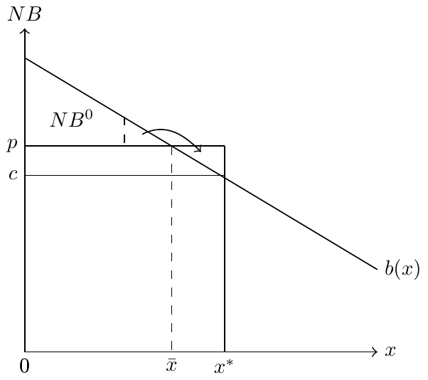

Physician Agency and Financial Incentives
Motivation
Physicians are trusted to act in patients’ best interests. Yet financial incentives mean they may provide more (or less) care than patients would choose themselves.
How do simple models help us understand when these incentives lead to overuse, underuse, or efficient care?
Today’s Roadmap
- Physician agency IRL
- Empirical evidence from C-sections and Medicare fees
- A simple model with price-setting physicians
- Patient vs. physician optima
- A simple model with fixed prices
- Participation constraint and comparative statics
- Policy implications
- Payment reforms, utilization, and unintended consequences
Physician Agency
- Basic idea: physicians strongly influence health care decisions, acting as agents on behalf of patients
- Potential for “other things” to influence care, including financial incentives
For the next couple of classes, we’re going to focus on the role of financial incentives. We’ll turn to the role of information barriers/heterogeneities at the end of this module
Do financial incentives matter?
Well…yes!. Let’s talk about one paper in particular:
- Clemens and Gottlieb, 2014. Do Physicians’ Financial Incentives Affect Medical Treatment and Patient Health?.
A model with price-setting physicians
Setup
- Denote quantity of services by \(x\)
- Patient benefit: \(B(x)\) with \(B'(x)>0\), \(B''(x)<0\)
- Patients pay \(p\) per unit; physicians incur cost \(c\)
- Net benefit to patients: \(NB(x) = B(x) - px\)
- Participation constraint: \(NB(x) \ge NB^0\)
Solving the model
- Question: how much care will be provided?
- Solve in two steps:
- Participation: \(B(x) - px = NB^0\)
- Substitute into physician profit \(\pi = (p-c)x = B(x) - NB^0 - cx\) and solve for \(x\)
- Participation: \(B(x) - px = NB^0\)
In-class Problem: Physician agency
Denote the quantity of care consumed by \(x\), and denote by \(B(x)\) the function that determines the benefit of care to the patient. Assume that the patient must pay the full price of care, \(px\), so that their net benefit is \(NB = B(x) − px\). Further assume that the physician can choose both \(x\) and \(p\).
- Find the patient’s optimal \(x\).
- Draw the marginal benefit function and note the price and patient’s optimal quantity. Assume \(B'(x)>0\) and \(B''(x)<0\).
- Find the physician’s optimal \(x\) assuming \(NB^{0}=0\).
- Add the physician’s optimal \(x\) to your graph and interpret the difference.
Physician agency in a graph
Example
Assume \(B(x)=8x^{1/2}\), \(NB^{0}=2\), and \(c=1\):
- Find the physician’s optimal level of \(x\) and \(p\).
- Find the patient’s optimal level of \(x\).
- Draw this graphically.
Answer
- Constraint: \(px = 8x^{1/2}\)
- Profit: \(\pi = 8x^{1/2} - 2 - x\)
- FOC: \(4x^{-1/2} - 1 = 0 \;\Rightarrow\; x^{*}=16\)
- Substituting back: \(8x^{1/2} - px = 2 \;\Rightarrow\; p = \tfrac{15}{8}\)
If the patient could choose, they would maximize \(NB(x)=B(x)-px\).
Condition: \(4x^{-1/2} = p\), which yields \(x = (32/15)^{2} \approx 4.5\) at \(p=15/8\).
A model with fixed prices
Solving the model
- The two-step method applies when both price and quantity are variable.
- If price is fixed (e.g., by Medicare), we instead use the participation constraint:
\[B(x) - \bar{p}x = NB^{0}\]
Why? This is a corner solution, derivatives don’t apply in the same way.
In-class Problem: Agency and fixed prices
Assume \(B(x)=4x^{1/2}\), \(NB^{0}=0\), and \(c=1\). Further assume that prices are fixed administratively at, \(\bar{p}=2\). Note that, in this case, we work only off of the patient’s net benefit constraint.
- What is the physician’s and patient’s optimal amount of care provided?
- The government is considering increasing the price to \(\bar{p}=3\). What are the new optimal levels of care for physicians and patients at this new price?
- How would the price change affect the difference between the patient and physician’s optimal amounts?
Comparative statics
An increase in the administratively set price leads to a decrease in quantity of services provided. And vice versa, a reduction in price leads to an increase in quantity provided. Why?
\[\begin{align*} b(x)\frac{\mathrm{d}x}{\mathrm{d}p} - x - p\frac{\mathrm{d}x}{\mathrm{d}p} &= 0 \\ \frac{\mathrm{d}x}{\mathrm{d}p} = \frac{-x}{p-b(x)} &< 0. \end{align*}\]
Comparative statics: intuition
- Comes directly from the participation constraint (a demand curve condition)
- Higher \(\bar{p}\) → constraint binds at lower \(x\)
- Lower \(\bar{p}\) → constraint satisfied at higher \(x\)
Why does this matter?
- Policymakers often try to reduce utilization by cutting payments
- But cuts may not have the intended effect on spending or care quality
- Relevant case: debates over Medicare’s physician fee schedule (Axios)
Takeaways
- A simple framework for physician agency and financial incentives
- Physicians may provide more care than patients would choose under full information
- Incentives matter, but real-world practice also reflects altruism, norms, and malpractice risk
- Sets up next class: comparing payment systems (fee-for-service vs. capitation)